Creating photorealistic materials for 3D rendering requires exceptional artistic skill. Generative models for materials could help, but are currently limited by the lack of high-quality training data. While recent video generative models effortlessly produce realistic material appearances, this knowledge remains entangled with geometry and lighting.
We present VideoNeuMat, a two-stage pipeline that extracts reusable neural material assets from video diffusion models. First, we finetune a large video model to generate material sample videos under controlled camera and lighting trajectories, effectively creating a virtual gonioreflectometer that preserves the model's material realism while learning a structured measurement pattern.
Second, we reconstruct compact neural materials from these videos through a Large Reconstruction Model. From generated video frames, our model predicts neural material parameters that generalize to novel viewing and lighting conditions.
Our method has two stages. First, we finetune a video diffusion model into a virtual gonioreflectometer that generates structured material videos from text or image prompts. Second, a feed-forward LRM infers a NeuMIP-style material from 17 frames using a rendering loss under novel views and lights. The resulting material supports relighting and novel shapes.

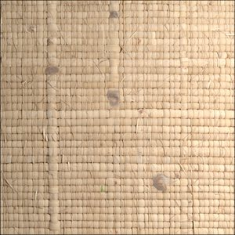
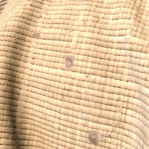
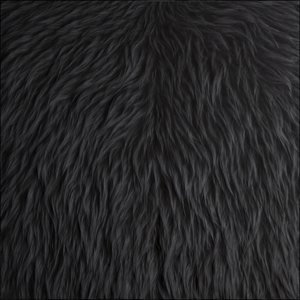
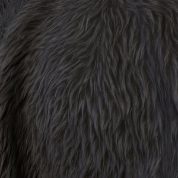
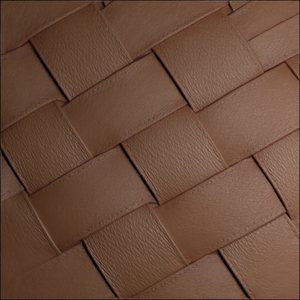
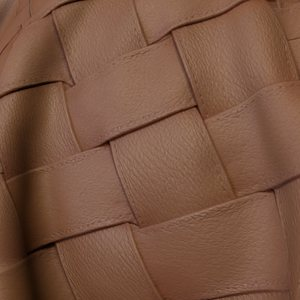
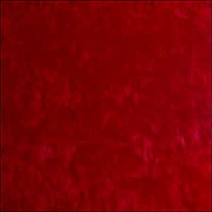
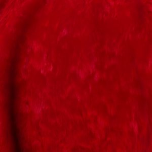
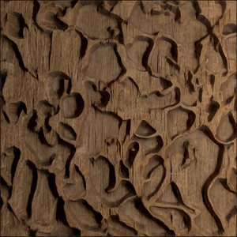
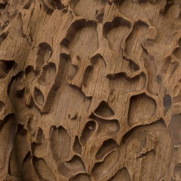
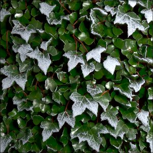
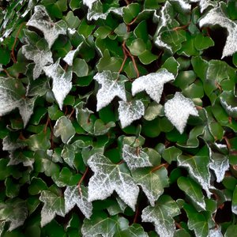
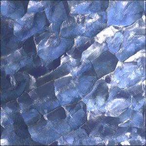
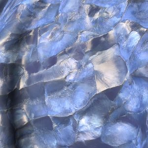
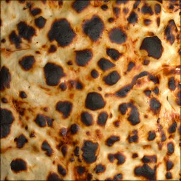
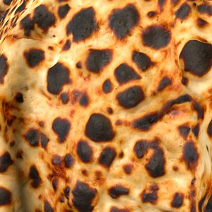
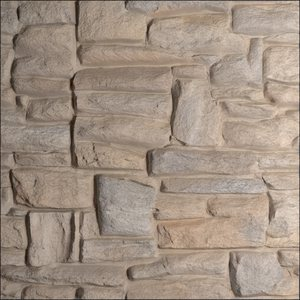
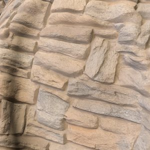
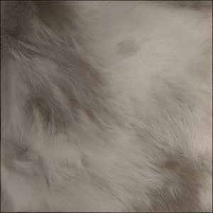
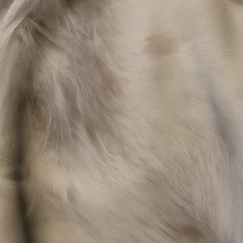
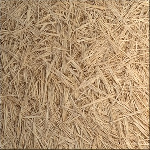
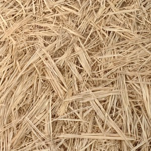
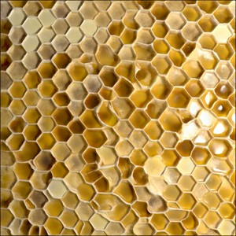
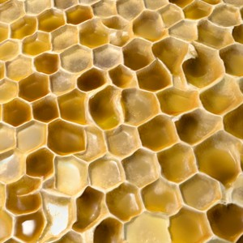
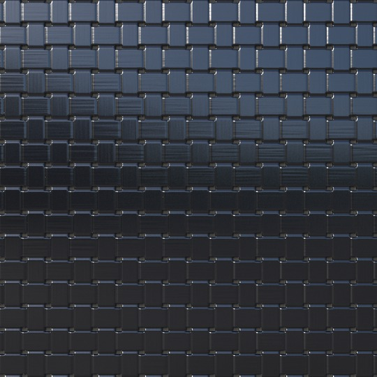
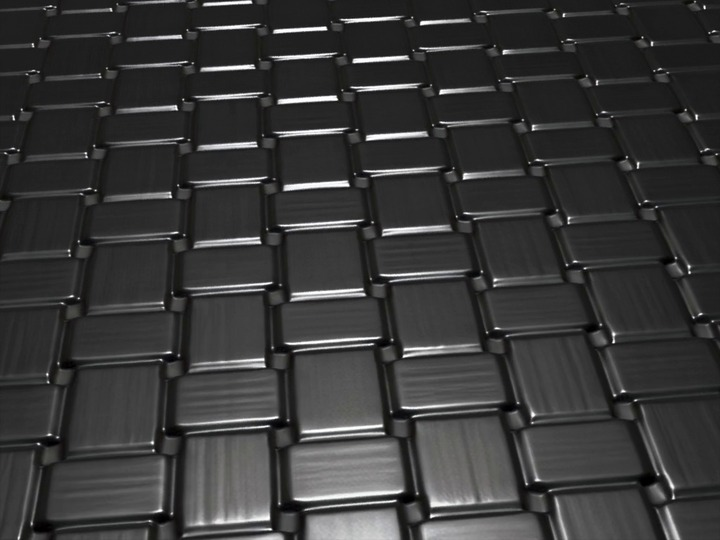
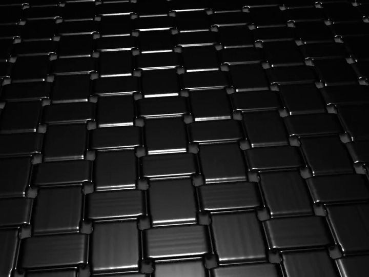
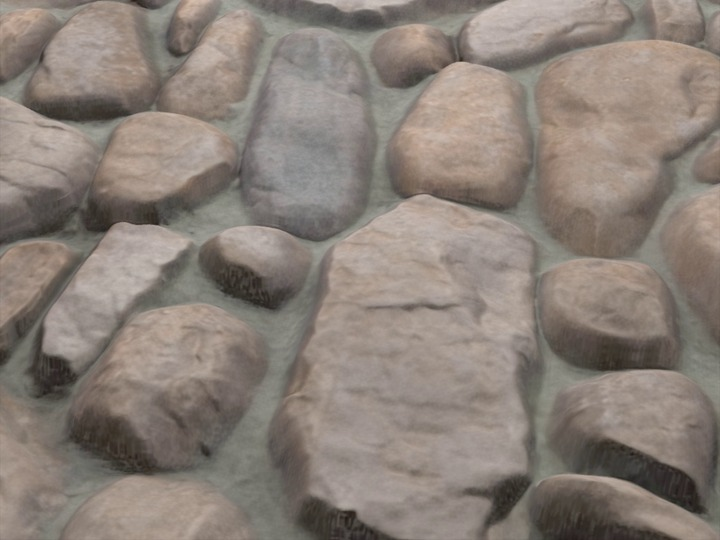
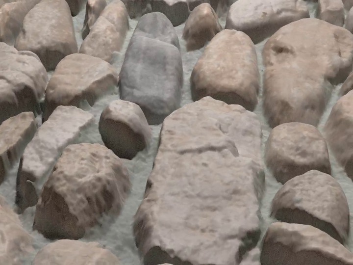
@inproceedings{xue2026videoneumat,
author = {Xue, Bowen and Hadadan, Saeed and Zeng, Zheng and Rousselle, Fabrice and Montazeri, Zahra and Hasan, Milos},
title = {VideoNeuMat: Neural Material Extraction from Generative Video Models},
booktitle = {ACM SIGGRAPH 2026 Conference Papers},
year = {2026},
}